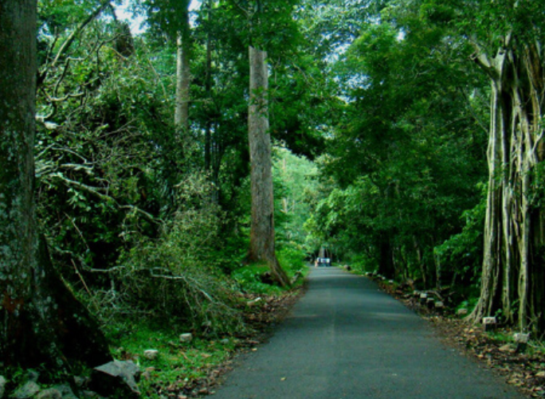
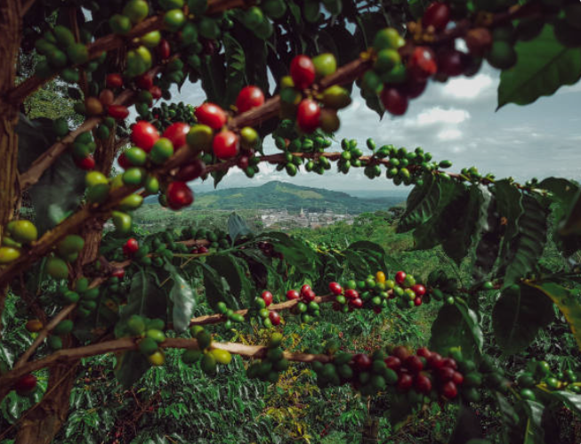
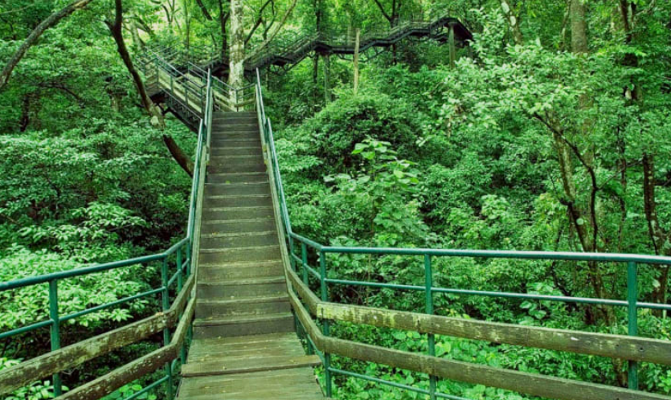
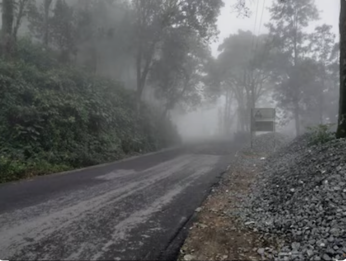
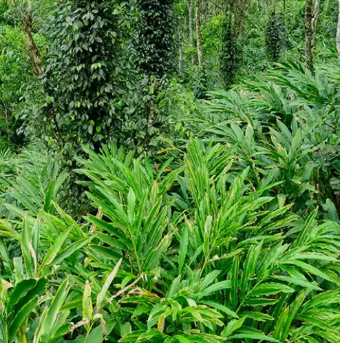

Murikkady is a beautiful village located near Thekkady in Idukki district, Kerala. It is famous for its vast spice plantations and coffee, cardamom, and pepper gardens. The cool climate, rolling hills, and lush green landscapes make Murikkady a peaceful destination for nature lovers and tourists. Visitors can enjoy the scenic beauty while learning about the cultivation of Kerala's famous spices.
The area offers breathtaking views of plantations and surrounding hills, making it an excellent place for photography and sightseeing. Guided plantation tours allow visitors to explore spice farms and understand the traditional methods of farming. Murikkady is an ideal destination for those who wish to experience the natural beauty and rich agricultural heritage of Idukki.





Murikkady is a beautiful village near Thekkady in Idukki District, Kerala. It is famous for its vast spice plantations, coffee estates, tea gardens and breathtaking mountain scenery. The cool climate and fertile soil make Murikkady one of the leading spice-growing regions in Kerala. It is a peaceful destination for nature lovers and tourists.
Murikkady has been an important agricultural region for many decades. Farmers began cultivating spices such as cardamom, pepper and coffee because of the area's fertile soil and favourable climate. Today, it is one of Kerala's major spice-producing villages and a popular tourist destination.
Murikkady is well known for its spice plantations. The major crops grown here include cardamom, black pepper, coffee, tea, cloves, cinnamon and nutmeg. Visitors can explore plantations and learn about spice cultivation.
Murikkady is rich in evergreen forests, spice plants, coffee bushes, tea plantations, medicinal herbs and flowering plants. The greenery creates a peaceful environment throughout the year.
Today, Murikkady is one of Kerala's leading spice-growing regions and an important tourist destination. Visitors enjoy plantation tours, nature walks, fresh spices and the beautiful landscapes of the Western Ghats.